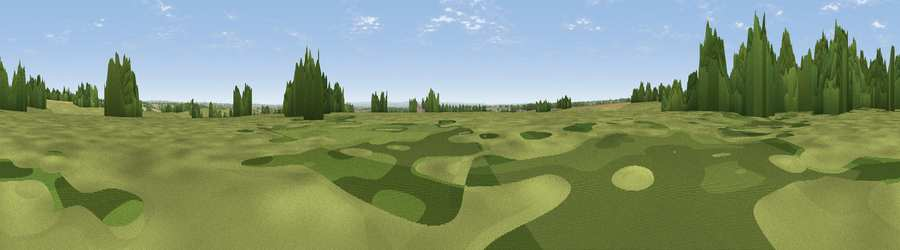

Chedworth Beacon
#25653 in England · top 50% of its area beats it · near ChedworthThe view, rendered

A 360° render of this exact spot computed from the terrain model, tree cover and land cover — summer colours, afternoon light, calibrated against photographs of famous viewpoints. Real trees, hedges and buildings will differ in detail.
The panorama
Grey silhouette: terrain skyline in each direction (720 bearings, Earth curvature and refraction included). Dashed green: skyline with trees (+15 m) and buildings (+8 m) as obstacles. Blue strip: how far the ground is visible on each bearing.
Where the view opens
Wedge length = distance to the farthest visible ground on that bearing (vegetation-aware). Rings at 10, 25 and 50 km.
What fills the view
54% grassland · 23% cropland · 22% woodland · 1% built-up
Angular shares of the visible panorama (visual magnitude), not map area. Landscape diversity 0.46 (0–1 Shannon).
Key numbers
More beautiful places nearby
The staircase of upgrades: each row has a higher view potential than everything closer. Driving times are estimates from straight-line distance, calibrated against real road routing — check an actual route before setting out.
| Place | Direction | Drive | Score |
|---|---|---|---|
| Viewpoint near Rendcomb | WSW · 2 km | ~6 min | 51.2 |
| Viewpoint near Withington | NW · 5 km | ~11 min | 61.0 |
| Pen Hill | W · 5 km | ~11 min | 66.4 |
| Viewpoint near Charlton Kings | NW · 9 km | ~18 min | 70.0 |
| Viewpoint near Leckhampton | NW · 10 km | ~20 min | 71.8 |
| Viewpoint near Leckhampton | NW · 11 km | ~21 min | 73.7 |
| Viewpoint near Leckhampton | WNW · 11 km | ~21 min | 77.8 |
| Viewpoint near Cleeve Hill | NNW · 15 km | ~26 min | 79.6 |
51.80954, -1.93748 · source: osm peak · position refined by local search. Computed location — check access rights before visiting.